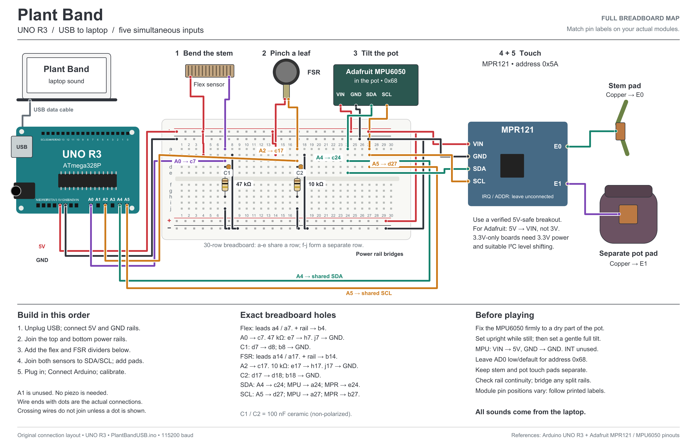

Arduino setup
Back to the plantArduino reads the plant. Your laptop animates it and makes the music. All five people can play at once over one USB cable.
1. Wire the sensors
Download the printable wiring sheet · Open the full-size vector drawing


Unplug USB while changing wires. Share Arduino GND with every sensor. Keep flex on A0 and FSR on A2. The MPU6050 replaces moisture; A1 is now unused. D6 and the piezo are unused for laptop sound.
| Part | Arduino connection | Sound |
|---|---|---|
| Adafruit MPU6050 in pot | VIN → 5V, GND → GND, SDA → A4, SCL → A5. Share A4/A5 with MPR121. Leave AD0 at default low (0x68); the sketch also recognizes 0x69. INT is unused. | Tilt or turn the pot for double bass. Faster turns add volume. |
| Flex sensor | 5V → flex sensor → A0 junction → 47 kΩ resistor → GND. Add 100 nF from A0 to GND. | Bending raises the violin pitch. |
| FSR | 5V → FSR → A2 junction → 10 kΩ resistor → GND. Add 100 nF from A2 to GND. | Pinching plays cello. More pressure makes it louder. |
| MPR121 breakout | SDA → A4, SCL → A5, GND → GND. Use default address 0x5A. IRQ is unused; the existing D2 wire can stay. | Two independent touch inputs. |
| Stem copper | MPR121 E0 → copper touch area on stem. | Touch plays viola. |
| Pot copper | MPR121 E1 → separate copper touch area on the pot exterior. | A 0.7-second hold reveals a cello and viola duet. |
| Laptop | USB data cable to Arduino. Select laptop speakers or headphones as the computer's audio output. | All five voices mixed together. |
Check your MPR121 module: a verified Adafruit breakout accepts 5V on VIN and a 5V controller. A bare MPR121 chip or unverified clone is not automatically 5V-safe. For a 3.3V-only module use 3.3V supply and appropriate I²C level shifting; follow its pinout. Do not put 5V on a pin marked 3V.
Your Adafruit MPU6050 VIN/STEMMA QT breakout has a regulator and level-shifted SDA/SCL, so the four header connections above are appropriate for the 5V UNO. This power wiring is specific to that breakout, not a bare MPU6050 or arbitrary GY-521 module. Fasten the board to a dry part of the pot so it moves with the pot; keep the wires slack enough for gentle tilting.
The pot electrode must be separate from the stem electrode and soil. Put it on the back of the pot, optionally under a thin decorative cover. Test that spot; the ceramic pot itself is not an electrode. Support the flex sensor so a comfortable bend does not crease it or damage the plant.
2. Upload once
- Download PlantBandUSB.ino. Put it in a folder named
PlantBandUSB, then open it in Arduino IDE. - Install Arduino AVR Boards in Boards Manager. Select Arduino Uno (the UNO R3 / ATmega328P) and its USB port.
- Install Adafruit MPR121 1.2.1 or later in Library Manager, including its Adafruit BusIO dependency. MPU6050 reading is included directly using Wire; no additional MPU library is needed.
- Connect the copper electrode first, keep hands off it, and upload. The sketch automatically calibrates each touch electrode at startup. This replaces the previous sketch on that board. Close Serial Monitor and Serial Plotter afterward so the browser can use the port.
3. Connect and calibrate
- Open Plant Band directly in desktop Chrome or Edge. Use its Vercel HTTPS address, or
http://localhost:8080when running locally. An embedded preview may not offer USB access. - Click Connect Arduino and choose the board. This also enables laptop audio. Wait for Live.
- Open Sensor setup. Under Connected sensors, enable only the sensors attached. The project starts with only Bend enabled for your current build. Its measured range is 275 at the natural resting curl → 375 extended. To recalibrate, hold the natural resting position and click Set rest, then gently extend to the full playing position and click Set extended. Either electrical direction is supported; no need to force the resting sensor flat.
- Release the FSR and click Set released. Make a comfortable firm pinch and click Set pinched.
- Enable Pot tilt once MPU6050 is connected. Set the pot down in its normal position, hold it still and click Set upright. Gently tilt to your comfortable playing limit, hold still and click Set full tilt. The default span is 30°; calibration accepts 6–60°. Keep the plant secure and avoid spilling soil.
- Enable Stem touch for the copper on MPR121 0 / E0. Your current build has no pot electrode, so leave Pot touch off. Close Sensor setup and play together. Settings are saved in this browser for this site; recalibrate after changing sensors or wiring.
While connected, the physical sensors control the instruments; on-screen controls show their responses. Stop, Escape, or switching away from the window pauses sound. Click Resume sound to continue. A lost or frozen USB stream silences the band within about a second. Recovered readings stay paused until you resume. Unplugging requires connecting again.
If it is quiet
Check computer volume and the page's mute button. If paused, resume. If the board is busy, close Serial Monitor or another Plant Band tab. If there are no readings, check the selected board, USB data cable and sketch. Missing MPU6050 silences only tilt; missing MPR121 silences its two touch voices. Flex and FSR continue independently. Use Sensor setup to check each sensor before calibrating it.
The flex calibration was measured with your sensor; FSR and pot orientation need calibration when connected. Unconnected analog pins can float. Turn off unconnected instruments in Connected sensors, then enable them when wired. Earlier firmware still plays flex/FSR/touch; upload this version to activate the MPU6050.
The accelerometer measures tilt relative to gravity; gyro speed also brings in the double bass. An upright, still pot silences it. A fast shake can temporarily distort the gravity estimate, and rotation about the vertical axis is not an absolute compass heading. The virtual demo lets you drag the pot sideways or use the Tilt slider. Holding the pot still plays its separate cello and viola duet.
Local preview and Vercel
From the project folder, run:
python -m http.server 8080 --directory src/interface
Open http://localhost:8080. For Vercel use the folder containing vercel.json as the project root, framework Other, no build command, output src/interface. No backend is needed. Sensor readings stay in the browser; USB access needs the user's choice of port. Opening the HTML file directly still works for the virtual demo; use localhost or HTTPS for hardware.
The old PlantBand.ino and PlantBand-Wiring.pdf describe the previous piezo/SoftPot build. Use this guide and PlantBandUSB.ino for this version.
References: Arduino UNO R3 · Web Serial · MPR121 power and pins · Adafruit MPU6050 wiring